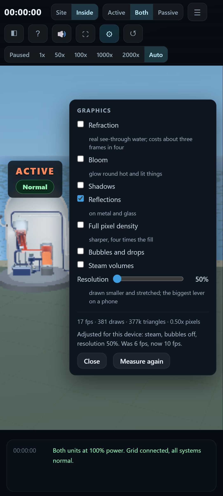

Particles in the water must read as flowing water, not as bubbles or white balls.
look head: tracers are streaks along the bore. Root cause was `mats.fleck` missing from the unit's material table, so Three fell back to a white MeshBasicMaterial.
Colours must NEVER change suddenly; every change is a gradient.
One recipe everywhere, and since F13 the recipe's input is a temperature: colourOfT(T) is the only place a colour is made, and every paint call reads a leg's T0/T1. Any new call site that mixes its own colour breaks this, hence WATCH.
 Sea water warming across the tube bank
Sea water warming across the tube bankThe condensate is the same temperature as the water going back to the boiler, so it must be the same colour, and the tank below the turbine must look full of water, not painted walls.
look sump: pool and suction line painted from the secondary's own span at the condensate temperature; the pool is a body with a rippling top in the bottom of the box.
Water must visibly become more orangish towards the top of the reactor, realistically, not paint in front.
look rpv: vertical ramp on the body of the water, cold at the bottom of the vessel to amber at the surface.
 Reactor: blue at the bottom, amber at the top
Reactor: blue at the bottom, amber at the topSteam speed in the pipe must be consistent with the steam in the boiler; fluid speeds consistent overall.
One compression law drawV(v) = 2.6 * |v|^0.55 drives every scroll, tracer, riser and vapour cloud.
 Boiler and its steam line
Boiler and its steam linejs/view/unit.js: drawV() is the only speed mapping; grep -n 'drawV(' shows every scroll and tracer uses it.
Junctions between pipe and vessel must be seamless: no colour step, no grey rod, no sleeve, no 'dark orange pipe and light orange tank'.
look head: hot and cold legs run to the divider plate inside the head; all ten collars deleted; one colour call per junction.
 Hot and cold legs entering the channel head
Hot and cold legs entering the channel headThe incoming water pipe must be seamless and properly connected to the rest.
look dome: the feed line runs through the shell and ends inside the vessel at the head of the downcomer; the downcomer sheet now starts exactly where the pipe stops and runs to the tube sheet whatever the water level, so the arriving water is seen to run down it. There is no ring.
 Feed line into the boiler
Feed line into the boilerThe blue pipe into the boiler must look like fluid going into a bigger tank.
look dome.
 Boiler feed
Boiler feedWater must be rendered the way games and physical simulations render fluids: a clean, standard model, not a hack. 'No game would ship such poor graphics.'
Standard real-time water model: two-octave flow map (aperiodic FBM, anisotropic along the bore), Beer-Lambert absorption by path length, Fresnel edge, glossy specular; refraction available as a toggle. Marked WATCH because the bar is 'game quality' and reflections of surroundings are still off by default for frame rate.
 Pump body
Pump bodyIf sea water is heated by condensing the steam, the pipe after the turbine must look orangish, less than the reactor.
The sea leg picks up 10 C across the condenser's one cold pipe (dT, display gain 10): cold at the top where it enters, warm at the bottom where it leaves, and the return line outside the box carries the outlet temperature back to the sea.
 Outfall amber, intake blue
Outfall amber, intake blueThe INCOMING sea water is colder than the outgoing water and must be blue, not orange.
The intake carries the sea leg's inlet end (tempAt 'in'), arrives over the box's lid and drops onto the top of the cold pipe. Both sea runs are built in the direction their water goes.
 Intake blue where the sea arrives
Intake blue where the sea arrivesThe sea must look like one seamless surface, no patches with different textures.
Open sea, forebay and channel set their ripple repeat from SEA_TILE and share the two-octave flow. WATCH: at the bay camera the forebay still reads flatter than the open water beside it; the boundary itself needs its own shot before this is called done.
Get rid of the network of pipes around the concrete container; they connect to nothing.
28 buttresses removed; steam and feed leave the containment in one corner.
No rings or pipes around the containment tank.
Three tori deleted: springline, plinth, cut rim.
Get rid of the middle white mini dome in the middle of the containment.
It was 110 unstepped particle instances stacked at the origin. Riser, Drip and Bubbles start hidden.
 Containment floor, nothing on it
Containment floor, nothing on itRemove the grey metal rings from all pipes.
Flanges removed from pipe(); all collars deleted.
 Bare pipes into the head
Bare pipes into the headNo borders on the pumps interrupting the visible flow of water.
Casing open-ended and shorter than the water in it.
 Pump without rims
Pump without rimsNo ugly grey structure hiding the sea water pipes below the turbine.
The condenser stands at the turbine's exhaust end under the generator as a glass box with a thin steel floor; the sea lines come over its lid and leave under its floor in the open.
 Condenser and sea lines
Condenser and sea linesNo weird grey stuff at the bottom of the condenser.
Nothing in the box but the one cold pipe, the drops off it, the vapour and the pool.
No weird grey cylinder coming out of the blue tube into the boiler.
look dome.
 Boiler inlet
Boiler inletThe backup pump must be on the correct side of the tank and pump to something.
L.eccs.x = -2.3: suction from the tank, discharge to the cold leg.
The backup water tank stays in front of the pillars where the circuit can be seen.
L.tank.z = 0.
The vent is a hole in the containment wall with the line running away from it: a visible opening on the inside face, nothing protruding inside, no column under it, and the cover back on top.
A dark disc the bore of the pipe on the inside face of the wall at the penetration; the line leaves flush, rises outside the wall and ends in the cover. No column, no drum.
 Vent: hole in the wall, line up to the cover
Vent: hole in the wall, line up to the coverThe container concrete must not look hollow.
Stencil section caps (js/view/section.js): the plane's cut through the wall and dome is capped exactly, the standard clipping_stencil technique. Shell closed at the foot so the count is meaningful.
No grey vertical arch or bar in the middle of the reactor view.
The cap planes that made it are gone; the stencil cap only draws where the plane is inside concrete.
 Whole unit, nothing across it
Whole unit, nothing across itBubbles must not appear in the air outside the vessels.
Each riser clipped on its own vessel's plane.
Steam enters the turbine at the SIDE, and the turbine looks like a real machine cut half open: walls, no floating rings.
look turbine: closed casing with end walls, no floating hoops; steam in along the axis at the left end, out through a real duct in the right-hand end wall.
 Turbine cut open
Turbine cut openIt must be clear how steam goes from the turbine to the condenser.
The exhaust is a steam run out of the casing's right-hand end wall, across, and down through the condenser's lid; you follow it as a pipe, not as vapour crossing a wall.
Click a pipe to break it must work: a hole with water coming out, no black ring.
Torn lip in the pipe's own steel oriented as a hole in the wall; a narrow stream falls to the floor.
On mobile it must render correctly when moving around, and the inside view must not be blank.
Visual-viewport sizing, context-loss handling, LOWFX path, caption layer measured in its own frame.
The welcome modal must be simple and make people want to click start.
index.html: kicker, three-line headline, two comparison cards, one call to action.
A config wheel at the top right to enable or disable each expensive feature individually.
Seven toggles with live counters; each drives stage.setQuality.
W A S D must work on the Site view.
nudgeSite() in js/main.js; proof shows the camera before and after holding A then W.
The background sound must be a pleasant nature-like sound with a soothing melody; no white noise; a real looped asset.
audio/sea-waves.mp3 (MIT, credited), equal-power crossfade loop, highpass 160 Hz, lowpass 3.2 kHz, pentatonic bells over it. Measured: 0.4% below 120 Hz, 18% in 120-400, 7% above 3 kHz, 19 dB swing.
audio/CREDITS.md, audio/LICENSE-sounds-for-focus.txt
js/audio.js loadSea(): equal-power crossfade, loopStart after the head
spectrum after filters: <120 Hz 0.4% | 120-400 18% | 400-1200 41% | 1200-3000 33% | >3 kHz 7% | swing 19 dB
30 fps makes no sense for this; use the established way to draw fluids, not a hack.
73 transmissive materials removed (each forced an extra scene pass). Measured at 1200x800 on the same renderer.
before: 862 draw calls, 569 ms/frame, 73 transmissive materials
after: 512 draw calls, 11 ms/frame, 0 transmissive materials
Do not execute any heavy code until the user has clicked Pick an accident.
boot() in js/main.js builds terrain, ocean, WebGL scene and starts the frame loop only on Start.
see proof/U7_lazy.txt: before Start {stage:false, units:0}; after Start {stage:true, units:2}
Commits must carry the repository owner's authorship.
git log --format='%an <%ae> | %cn <%ce>' shows the owner as author and committer on every commit. The harness adds a Co-Authored-By trailer in the message body.
author and committer on every commit: mayerwin <2272127+mayerwin@users.noreply.github.com>
No em dashes in interface copy.
grep over index.html, js/ui.js, js/view/labels.js, js/scenarios.js returns nothing.
grep -rn '\u2014' index.html js/ui.js js/view/labels.js js/scenarios.js -> no matches
Use a proper engine for the fluids: design the 3-D structures, put water in them, set the sea's temperature and say where heat goes in, and let the engine derive the colours. No hand-assigned colours per pipe.
Temperature travels with the water (Leg.T0/T1/dT, Circuit.setTemps in flow order); solveTemps() sets one inlet temperature per circuit and the dT of the exchanging legs; colourIn() maps a temperature within its circuit's own span. Nothing is told a colour.
With Refraction switched on the liquids must not go near black.
stage.setQuality('refraction'): the fluid shader's absorption density steps back to a quarter while transmission is on, and is restored when it is off.
Bloom must not cost most of the frame rate.
Bloom is off by default on every device and, on, runs on a buffer 0.34 of the frame on each axis (a ninth of the pixels) instead of 0.6. Measured at 1200x800 on this build: bloom off 10.6 ms a frame, bloom on 10.2 ms; the difference is inside the noise.
Bloom unticked by default
js/view/stage.js: bloom default false; setSize(w*0.34, h*0.34). Measured: 10.6 ms off, 10.2 ms on.
In the tsunami the flood must cover the emergency water tank and the pump beside it; when the text says the sea has receded, the water must be gone.
The flood sheet reaches into the section (its hole round the containment is gone: this model keeps the equipment a tsunami drowns inside the cutaway), rises at 2.5 m/s, is painted as sea water, and a 14 m wave puts about five metres on the deck (clamp((flooded-5.7)*0.9, 0, 7.6)). The recede event sets flooded back to 0.8 and the sheet drops.
When the containment is breached the smoke must leave through the breach only, not cross the building, and the breach must not be a row of cones.
The breach plume is released 4.5 m outside the wall with a 2.2 m spread and rises; the tear is a ragged rim of flat concrete shards set into the wall round the opening.
In the primary circuit the difference between the cold leg and the hot leg must be visible. Scale colour between the coldest and warmest water of each circuit; the same orange need not mean the same degrees in two circuits.
Circuit.range() in js/flow.js gives each circuit its own coldest and hottest water every frame; colourIn(range, T) in unit.js maps that span onto the ramp. A 290 C cold leg is drawn blue and a 325 C hot leg orange in the same picture as a 15 C sea and a 115 C outfall.
 Primary loop: cold leg blue, hot leg orange, from a 35 degree span
Primary loop: cold leg blue, hot leg orange, from a 35 degree spanSteam must leave the turbine at its end through a real opening, not cross the casing wall; the condenser holds one vertical cold sea-water pipe the steam condenses on, and the warm return runs outside the enclosure.
The exhaust is a steam run out of the casing's right-hand end wall, across and down through the condenser's lid. In the box stands one vertical sea-water pipe, cold at the top and warm at the bottom, with drops forming on it; the intake arrives over the lid, the return leaves under the floor and runs along the ground to the sea, outside the box.
With every graphics option on, the frame rate must not collapse (17 fps on a laptop is not acceptable).
Measured on the laptop's own GPU (Intel Arc, Chrome, vsync off), as the gap between animation frames. Proof file, 1500x950, after the code review: every option on 14.6 ms/frame (69 fps), desktop defaults 7.8 ms (128 fps); before the review 24 and 17 ms. Session bench on the full 2194x1234 window at 1.5x pixel density: defaults 19 ms (53 fps), every option on 40 ms (25 fps). Before this build every option on was 76 ms (13 fps) at 1500x950 and 186 ms (5 fps) on the full window, and the whole of it was bloom: the composer's multisampled half-float target resolved its depth and stencil attachments every frame, 60 ms through ANGLE on this GPU. Nothing after the scene pass reads them, so they are no longer resolved, and bloom costs about 5 ms. Chrome runs on the laptop's Intel GPU, not its RTX 4070; that is Windows' per-app graphics setting, not the page's. Numbers vary by a third between runs as the laptop warms.
docs/proof/U12_allon.txt: GPU, 1500x950, every option on 24 ms/frame (42 fps); desktop defaults 17 ms (60 fps); phone defaults 12 ms. Was 76 ms (13 fps).
The requirements page must be reachable without cloning the repository: part of the app, hosted with it.
docs/requirements.html is linked from the app's help card and ships with the site, so on GitHub Pages it is at <site>/docs/requirements.html. The branch is merged to main so Pages serves it.
On a less capable phone the graphics settings must adjust themselves the first time, so the frame rate is good enough.
view/autoq.js. The first time the inside view is drawn, the tuner measures the wall-clock gap between frames over two-second windows (after a warm-up for shader compiles, ignoring hitches) and while the median is over 37 ms (30 fps with a tenth of slack) takes one thing off, cheapest loss first: bloom, refraction, full pixel density, shadows, resolution 80%, steam, resolution 65%, bubbles, resolution 50%. What it settled on is stored and put back on the next visit without measuring again. A box or the resolution slider set by hand is stored as the visitor’s own choice and ends tuning; Measure again re-runs it. Under automation (the gate and proof tools, on a software renderer) the tuner stands down unless ?tune=1 asks for it, so the proofs show the shipped settings. Verified in Chrome’s Pixel-class phone emulation throttled 8x: five rungs in 37 s, stored, restored on reload, overridden by hand, re-measured on request.

Phone, after tuning: what came off, and the rate before and afterdocs/proof/U13_tune.txt: the step log, the stored record, the reload, the hand override and the re-measure.
The simulation must run smoothly on a Pixel 10.
Not yet measured on a Pixel 10: none is attached, and the Android emulator on the laptop became unreachable when a VPN cut loopback. The phone path draws one device pixel per CSS pixel with shadows, bloom and refraction off (418 draws, 387k triangles), which is 5 ms a frame on the laptop GPU under Pixel-class emulation; that is a floor, not a prediction. On the phone itself U13 measures the real frame gap and steps down until the median is under 37 ms. WATCH until a Pixel 10 number exists.
docs/proof/U14_pixel10.txt: what is measured, what is not, and why.
The intake pumphouse on the site view must be drawn (it referenced a height field the part does not have, so its depth was NaN, it never drew, and its NaN sort key could scramble the depth sort of the whole site).
plantview.js reads the part's depth. Probe: every sort key on the site is finite (20 of 20). The pumphouse stands on its pier at the seaward corner of each site.
Reset must heal a pipe broken by hand: the plant kept its break flag, so the wound stayed on screen and the same pipe could never be broken again.
Plant.reset clears the break flags; Unit.reset removes the torn lip, the jet and the spray and disposes their geometry, material and texture; sim.onReset calls it.
docs/proof/R2_reset.txt: after reset broken=false, fx=0, leak=0; the pipe can be broken again.
The Bubbles and Steam toggles in the settings panel must stick. Both were overwritten by the units on the next frame, Bubbles also hid the fuel rods for a frame, and Steam switched back on revealed a drum in the boiler that is never meant to be drawn.
The units read stage.q every frame and decide the visibility of their own tracers, risers, drips, vapour and steam cores from it; the stage no longer traverses InstancedMeshes; the hidden drum is untagged. Hidden tracers are no longer advanced.
docs/proof/R3_toggles.txt: particles off leaves 0 tracers shown and the fuel visible; steam off leaves 0 steam cores; both restore.
Keys typed into a control must not be commands: Space in the focused resolution slider paused the plant and R reset it.
The key handler ignores events whose target is an input, textarea or select.
ui.js keydown: target INPUT/TEXTAREA/SELECT returns before any key is read.
The inside view must not spend its frame on work nobody can see: caption layout forced the page to lay out twenty times a frame, hidden tracers were advanced, finished plumes uploaded buffers, the shadow map was redrawn every frame, and a dozen colours were allocated a frame.
Captions are measured only when their text or the page changes; tracers advance only when shown and moving; idle plumes hide themselves; the shadow map redraws on alternate frames; scratch colours and a fixed circuit list. Measured on the laptop GPU at 1500x950: defaults 17.0 to 7.8 ms a frame, every option on 23.7 to 14.6 ms.
docs/proof/R5_frametime.txt: before and after, six configurations.
The flood sheet is the sea come over the wall, so it must ripple at the sea's tile; it set the shared tile and then overrode it with its own.
The override is gone; the sheet uses 1400 / SEA_TILE like the open water, the forebay and the channel.
The top of the boiler must show steam, as much as the steam line above it carries.
The steam space above the water and the dome are drawn as a body of torn vapour at half opacity when the boiler is carrying heat, scrolling upward at the steam line's own compressed speed; the puffs rising off the water are denser too.
The feedwater must not step from blue to orange where it enters the boiler; cold water mixing into hot water changes temperature along a gradient. And the line must not go all round the containment: straight over the reactor, arriving at the boiler's side.
The feed line comes in through the wall low on the turbine side, up beside the steam line, straight across at 29 m above the reactor and the pool, and into the boiler's right side at the feed nozzle. The downcomer ring the feed lands in stands just outside the water column, so in section it is the two strips either side of the column, blue at the nozzle and orange six metres down where it has mixed. Its gradient used to run round the sheet instead of down it, and the sheet sat behind opaque water.
 The feed line over the reactor into the boiler's side
The feed line over the reactor into the boiler's sideThe three supports under the boiler's tube bank serve no purpose and clutter the view. The hot leg must arrive AT the bottom of the boiler with water flowing in, not traverse it, and the cold leg must leave through a hole at the bottom left.
The two legs and the divider plate are gone; the boiler stands on one flat pedestal set back into the kept half, like the turbine's. The hot leg ends on the surface of the channel head at a dark opening, into the head's hot half; the cold leg starts at an opening on the head's left and is drawn out of its cold half.
The faint structure inside the reactor serves no purpose and overlaps the rods; simplify.
The core barrel cylinder is gone. Inside the vessel are the rods, the water, the level line and the fuel-top mark, and nothing else.
The pipe out of the turbine must not traverse it: a hole or funnel at the bottom right of the casing, so the spent steam is seen drawn down into the condenser.
A funnel in the casing floor at its exhaust end, the casing's own steel, wide at the machine and narrowing into the top of the condenser shell directly under it, with the steam scrolling down inside it at the steam line's speed. Nothing crosses the casing.
The condensation chamber does not look realistic; draw a proper, standard surface condenser.
Drawn as the textbooks draw one: a horizontal shell under the turbine, water boxes at both ends, a two-pass tube bank with the sea in cold along the lower row and out warm along the upper (each run one body of water changing colour along its length), the steam settling onto the bank, drops falling into a hotwell under the shell, and the condensate pump drawing from the hotwell.
 The surface condenser in section
The surface condenser in sectionThe sea water circuit crosses itself, and nothing shows how the sea gets into the condenser.
A circulating pump stands at the forebay and draws straight up out of it, pushing into the lower half of the sea-side water box; the warm water leaves the upper half of the same box and runs out beyond the pump to the far side of the forebay. In on the near side, out on the far side: no crossing.
Performance is still poor despite how simple the model is; switch to a true game engine if the current one is showing its limits.
Measured on the owner's full window: the slow view was the 2-D site, at 79 ms a frame (12 fps), and the 3-D was 23 ms. The site's cost was the panels' backdrop blur (35 ms) and per-path Canvas-2D overhead in the sorted pass (21 ms), neither of which scales with pixels; the blur is gone, the pass is drawn into a layer and reused until the camera or the plant changes, the vignette is a CSS overlay. Site view now 2.9 ms idle; inside 12 ms defaults, 25 ms every option on. The engine is not the limit: on the laptop's RTX 4070 the same page runs at 6 ms inside, but Chrome uses the Intel GPU unless Windows is told otherwise (see the proof text).
docs/proof/U15_performance.txt: before and after on both GPUs, where the 79 ms went, and the Windows setting that puts Chrome on the RTX.